Git y el arranque de tu proyecto
Ramas, fusiones y el alcance del semestre
Sin control de versiones
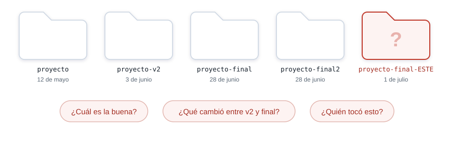
Lo que se pierde
- El historial vive en tu memoria, y tu memoria dura una semana.
- La copia buena es la que abriste de último.
- Volver a un estado anterior se convierte en adivinar.
Y esto pasa trabajando completamente solo, sin que nadie más toque el proyecto.
Lo que hace falta
- Volver a cualquier estado anterior.
- Saber qué cambiaste y cuándo.
- Probar una idea sin romper lo que ya sirve.
- Comparar dos versiones tuyas sin perder ninguna de las dos.
Dos cosas distintas con nombre parecido
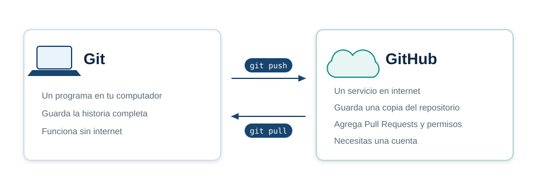
Dónde vive tu trabajo
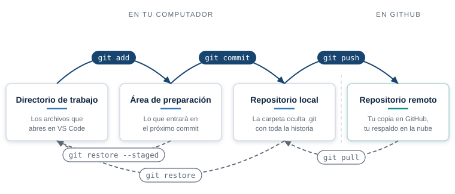
Qué hace cada uno
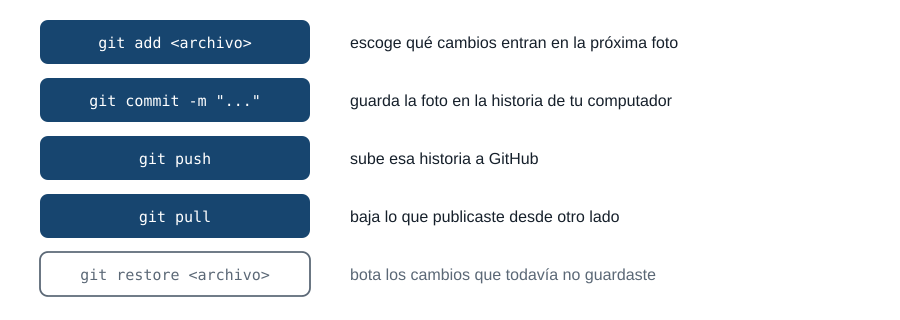
Nada se mueve solo
git push # sube tus commits a GitHub
git pull # baja lo que subiste desde otro computador
Tu commit vive en tu disco hasta que lo subas.
Lo que hiciste en otro computador (el de tu casa, el del laboratorio) no aparece aquí hasta que lo bajes.
Qué guarda un commit
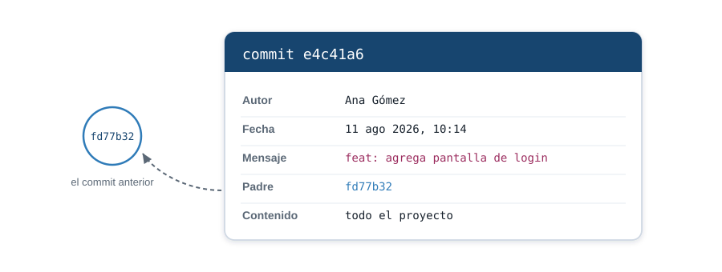
La historia es una cadena
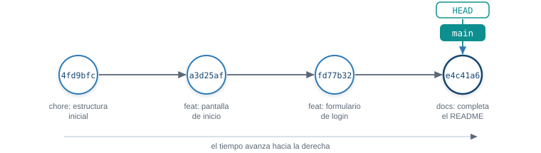
El nombre de cada commit
e4c41a6f2d81b9c0a7e35d4188c6f0b2ad19e7c3
Git calcula ese número a partir del contenido. Cambia una coma y cambia entero.
En la práctica escribes los primeros siete y Git entiende de cuál hablas.
Cómo se escribe un mensaje
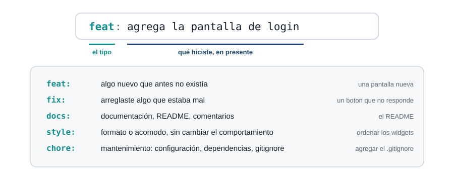
El mensaje lo lees dentro de un mes
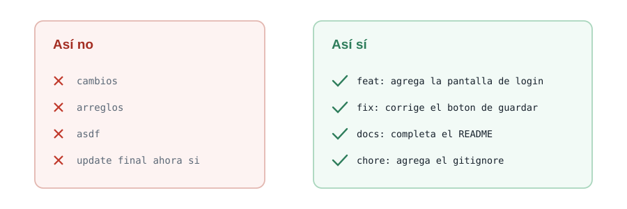
Una rama es un puntero
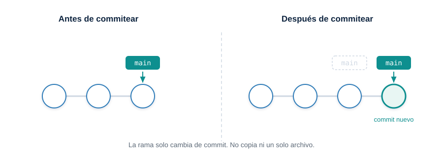
Trabajar aparte y volver
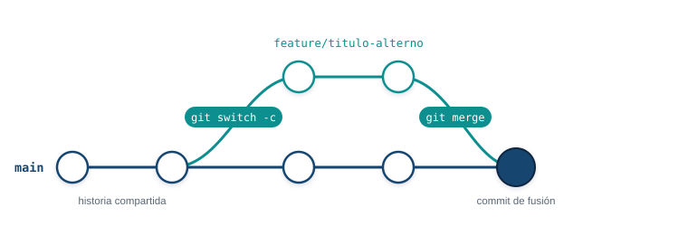
git switch -c <rama> crea la rama y te para en ella. git merge <rama> trae esos commits a donde estás.
Dos maneras de fusionar
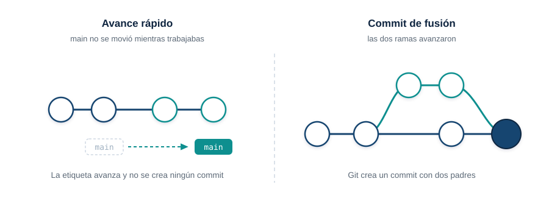
Cuando Git se detiene
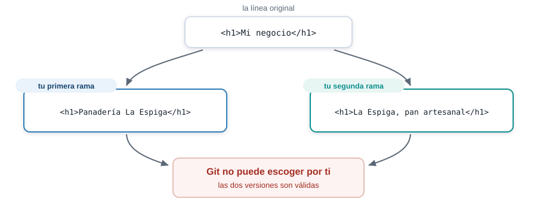
Así se ve un conflicto
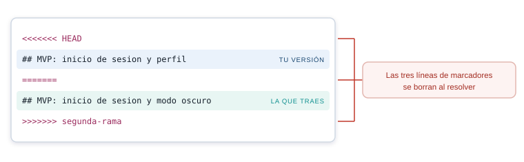
Resolver toma un minuto
- Abre el archivo y busca los marcadores.
- Deja el texto que debe quedar.
- Borra las tres líneas de marcadores y commitea.
Ese comando te devuelve al punto de partida cuando el archivo queda irreconocible.
Qué es un Pull Request
Una propuesta de cambio. Dice: “tengo esto listo en mi rama, quiero meterlo en main”.
- Vive en GitHub, no en tu computador. No existe ningún
git pull-request.
- Muestra el cambio línea por línea, para que lo leas completo antes de que entre.
- Deja registro de qué propusiste y por qué.
main no se toca hasta que pulsas el botón de fusión.
El Pull Request
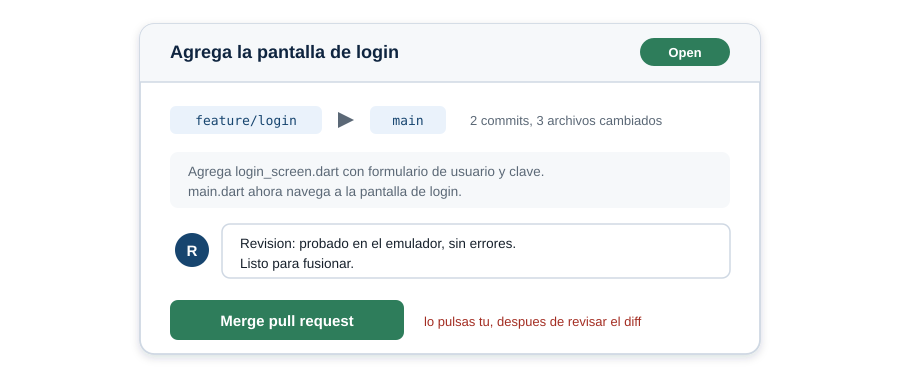
El ciclo completo
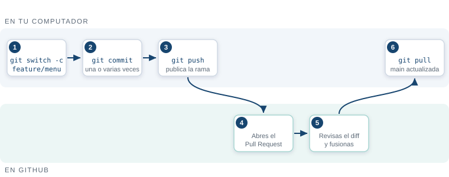
git push -u origin <rama> publica la rama por primera vez. git pull deja tu main al día después de la fusión.
Lo que no se versiona
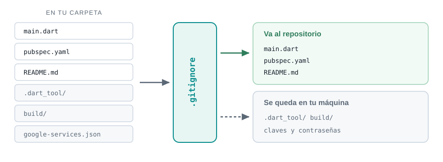
Una clave subida ya está quemada
Borrarla un minuto después no sirve. El historial la conserva, y cualquiera con el enlace puede leerla.
Por eso un archivo con claves entra al .gitignore antes del primer commit.
Tres reglas
main siempre funciona. Lo que todavía no sirve vive en una rama.
Una rama por cada cosa nueva. Se abre, se revisa, se fusiona y se borra.
El mensaje explica el cambio, no el archivo que tocaste.
Por qué definir el alcance ahora
- Desde hoy, casi todo lo que entregues en el semestre es un incremento del mismo proyecto.
- Sin alcance claro, cada semana empiezas de cero o cambias de idea a mitad de camino.
- La demo de la semana 17, en un dispositivo real, es este mismo proyecto, más grande.
Hoy no programas el proyecto. Hoy decides qué va a ser.
Qué es un MVP
- MVP: producto mínimo viable. La versión más pequeña que ya sirve para algo real.
- No es “la mitad del proyecto”. Es el proyecto completo, con menos funciones.
- Cada unidad del semestre le agrega una capa a ese MVP: navegación, datos, persistencia, Firebase.
Si tu MVP no cabe en las horas independientes de 17 semanas, el MVP está mal definido, no el semestre.
Las cinco partes de docs/alcance.md
- Problema. Qué resuelve tu app, en una frase.
- Usuario objetivo. Quién la usa y para qué.
- Funcionalidades mínimas. La lista concreta de lo que va a hacer el MVP.
- Qué queda fuera de alcance. Lo que decides no hacer este semestre.
- Stack. Flutter y los paquetes o servicios que ya sabes que vas a necesitar.
Funcionalidades mínimas: el corazón del MVP
- Escribe verbos, no sustantivos: “el usuario registra un gasto”, no “gastos”.
- Cada funcionalidad mínima debe poder mostrarse en una demo de dos minutos.
- Si una funcionalidad depende de otra que todavía no existe, va después, no en el MVP.
Cuenta las funcionalidades que escribiste. Si pasan de cinco, revisa cuáles son de verdad mínimas.
Qué queda fuera de alcance
- Decir qué no vas a hacer es tan importante como decir que sí.
- Ejemplos típicos que sobran en un MVP: modo oscuro, varios idiomas, panel de administrador, red social propia.
- No es una lista de renuncias. Es lo que evita que te quedes sin tiempo en la semana 15.
El equipo crea un proyecto nuevo
- Equipos de tres, formados hoy en clase: el mismo equipo hasta la Semana 17.
- El proyecto nace con
flutter create <nombre>, nunca continuando hola_iue.
- El nombre sale de la idea real que el equipo acaba de escribir en
docs/alcance.md.
hola_iue sigue siendo tu ejercicio de práctica de la Semana 2. El proyecto del semestre arranca de cero, con tu equipo.
Qué va a pasar con este documento
docs/alcance.md no se escribe una vez y se olvida.- Cada semana con porcentaje evaluativo revisa si el entregable sigue dentro del alcance.
- Si el alcance cambia a mitad de semestre, se actualiza el documento y se explica por qué.
- La sustentación de la semana 17 se compara contra lo que escribiste hoy.
Cierre: a escribir
- Los próximos minutos son para escribir en equipo, no para escuchar.
- Abran
docs/alcance.md y completen las cinco partes entre todos los integrantes.
- Si terminan antes, revisen que cada funcionalidad mínima sea alcanzable con lo que ya saben de Flutter.
Escribe. Paso por las mesas si tienes dudas.
Siguientes pasos
- Apliquen el flujo completo en el proyecto del equipo: ramas, commits con mensaje, fusión revisada por otro integrante.
- Provoquen un conflicto a propósito, entre dos integrantes del equipo, y resuélvanlo.
- Suban el historial ordenado a GitHub.
Entreguen el enlace del repositorio del equipo por el canal de actividades.